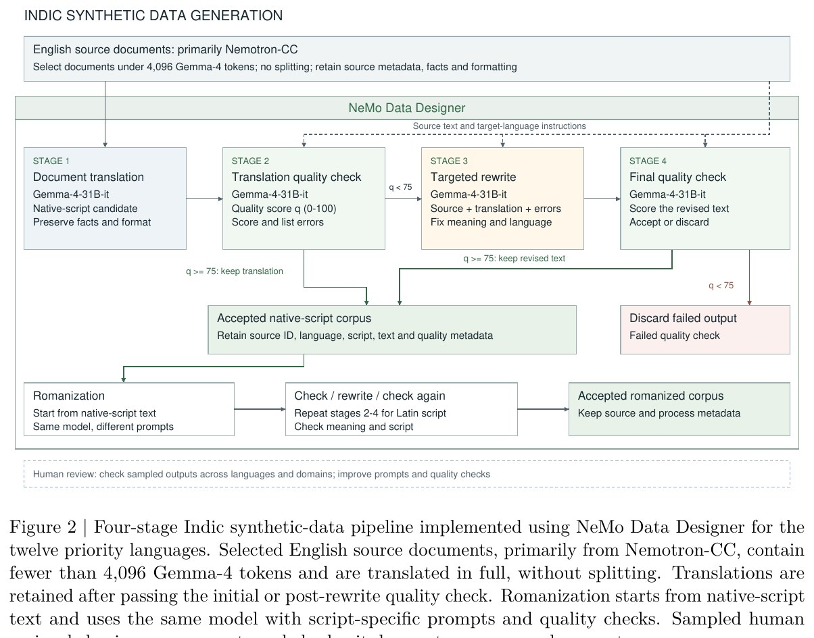
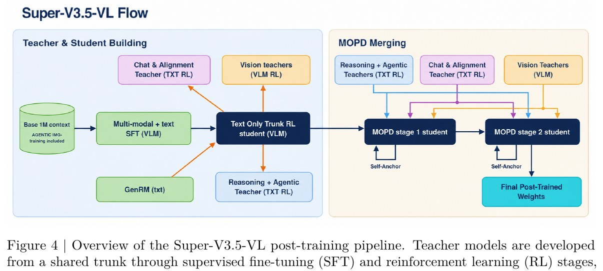
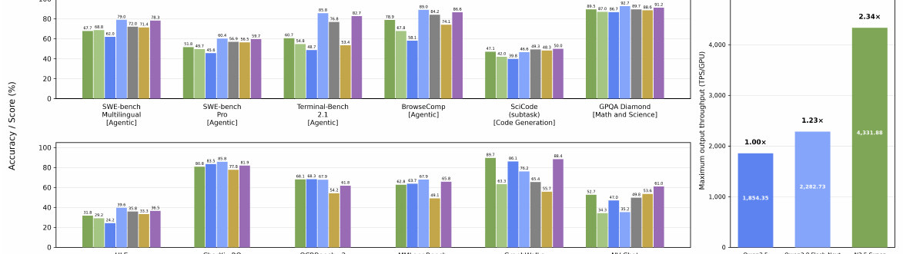

速览
五条要点
小模型靠蒸馏 + 专项阶段追上 Ultra
Super 激活参数约为 N3-Ultra 的 1/4.6，SWE-bench Pro 51.78 对 49.66 表 10，Terminal-Bench 2.1 60.67 对 54.78 表 10。但对比 Qwen3.8 Flash-Next、GLM-5.3 Flash，agent 类基准整体仍落后。
SWE 中期训练主要换来「换 harness 不掉分」
在同一份实验 SFT 下，OpenHands 下几乎不变（71.3→71.9），换到其他 5 个 harness 平均 +8.6（SWE-bench Verified），Codex 下 48.4→61.8 表 5。
两阶段 MOPD 把 6 个专家教师合成一个学生
阶段 1 先蒸「涨得快、后期会掉」的 agent / 推理，阶段 2 换成对话和视觉，并让老师和学生按 α=0.2 混合来平滑蒸馏目标 §3.6。
MTP 后训练加强：采样解码下接受长度 +21.8%
平均接受长度贪心解码 4.287→4.718，概率采样 3.787→4.612 表 8；做法是冻结主干、用主干分布做 KD，并混入 MTP 自己生成的 hidden state §3.7。
读数时注意口径
测试时扩展后的 TB2.1 71.9% 是另一套口径（候选 pass@1 均值为 62.7），和表 10 的 60.67 不是一回事 §3.11；结论节写的 NVFP4 恢复率 99.52% 也与摘要的 99.62% 不一致（见局限）。
架构：沿用 Nemotron 3 主干，改造 MTP，Super 加上视觉
本篇没有给整体架构图，层数和层的排列也没有重新交代（指向 Nemotron 3 系列报告）。下面只整理原文明确写出的部件。
相对前代改了什么
- MTP 从两个头合并成一个可递归共用的头。Nemotron 3 Super Base 原本有两个不共享的 MTP 头；3.5 只保留第一个头的参数初始化，丢掉第二个 §2.1。Lightning 的 MTP 头从 Super 3 Base 迁来：先把 latent MoE 投影融合进专家的 up/down 矩阵，再把隐藏维 4096→2688、MoE 中间维 2688→1856、路由专家 512→128 剪到 Lightning 的尺寸 §2.1。
- Super 加上视觉。主干预训练只用了文本；SFT 阶段先预热视觉投影层，然后接入 C-RADIO 编码器和 VL connector，和语言部分一起微调 §3.1 · 表 12。
- 为什么推理更省。原文解释：Attention 层更少、KV 头更窄，每个请求的显存随会话变长增长得更慢；MTP 接受长度更高；LatentMoE 在专家之间传递的是潜向量，比 Qwen 的 hidden state 小 §5.2。这是 NVIDIA 用内部性能模型给出的解释，不是消融实验。
Nemotron 3.5 Super 多模态
- 参数
- 120B 总参 / 12B 激活 §1
- 初始化
- Nemotron 3 Super §2.2
- 专家
- 每个 MoE 层 512 路由专家 §4.2
- 模态
- 文本、图像、视频、工具环境 摘要
- 草稿模型
- 原生 MTP + LiLiCorr（1.13B，其中 head 37M） §5.7.1
- 部署精度
- Blackwell 上 W4A4，其他平台 W4A16 §4
Nemotron 3.5 Lightning 纯文本
- 参数
- 30B 总参 / 3B 激活 §1
- 初始化
- Nano 3 Base §2.2
- 尺寸
- 隐藏维 2688 · MoE 中间维 1856 · 128 路由专家（按 MTP 剪枝目标推得）§2.1
- 模态
- 仅文本 §3.1
- 草稿模型
- 原生 MTP + DFlash + DSpark §5.7
- 部署精度
- 任何 GPU 都用 W4A16 §4
数据：哪些给了比例、哪些只给了规模
原文明确给出比例的只有：Indic CPT（10/90）、中期训练配比（表 4）、推理教师课程（90/5/5）、MOPD 各阶段 prompt 份额、QAD（75/25 实验）。下面只对这些画条形图，其余一律列「已披露规模」。
4.1 预训练侧
| 阶段 / 数据 | Super | Lightning | 说明 | 来源 |
|---|---|---|---|---|
| MTP 预热 | 100B | 100B | 冻结主干，只训练 MTP 头 | §2.1 |
| 蒸馏 | 1T | 1T | Lightning 用 Ultra 3 Phase 2 数据；Super「沿用同一配方」，换老师 | §2.2 |
| Indic CPT | 100B | — | 10B Indic（合成 + 自然）+ 90B 沿用前一阶段配比 | §2.3 |
| 长上下文（1M） | 35B | 21B | 数据配比与 Nemotron 3 Ultra 相同 | §2.4 |
| SWE 中期训练（256K） | 65.4B | — | 配比见表 4 | §2.5 |
| 长上下文恢复 | ≈9B | — | 配方同长上下文阶段 | §2.4 |
各数据源在蒸馏 1T 中的配比、去重与质量过滤细节：原文未披露（指向 Ultra 3 报告）。
4.2 Indic 合成语料：翻译 → 打分 → 定向改写 → 再打分

规模 表 1
- 总输出 2,825.6B token（≈2.83T），22 种语言、34 种语言-文字组合，按 Gemma-4 tokenizer 计 表 1
- 12 种重点语言 ≈2.50T，其中罗马化 224.6B；另外 10 种低资源语言 ≈327B，只有母语文字版本 §2.3
- 生成量远超 Super CPT 所用（CPT 只给合成 + 自然 Indic 分配 10B），完整语料计划公开 §2.3
过滤与工程 §2.3
- 质检阈值 q ≥ 75；保留源文档 ID 和质量元数据，可追溯
- 10 种低资源语言改用 Bodhan-MT 翻译，Gemma-4-31B-it 质检，阈值按语言分别设置；Santali 长文档用重叠窗口；Manipuri 从孟加拉文字转写成 Meitei Mayek
- 翻译成本：每百万英文输入 token 从 0.835 降到 0.335 GPU 小时（约 −60%，相当于 2.49×），靠投机解码、FP8 权重和 FlashAttention
- 原文自己承认：翻译和打分用同一个模型，可能偏向自己的译文
合成数据与自然数据在这 10B 里各占多少：原文未披露。原文还说明这些是「配置的采样份额」，不是实测的分源 token 数 §2.3。
表 1：各语言输入 / 输出 token（B）12 + 10 种语言
| 重点语言 | 母语 输入 | 母语 输出 | 罗马化 输入 | 罗马化 输出 | 补充语言 | 输入 | 输出 |
|---|---|---|---|---|---|---|---|
| Bengali | 114.0 | 138.9 | 12.2 | 19.0 | Assamese | 16.3 | 31.1 |
| Gujarati | 115.5 | 196.4 | 12.0 | 17.2 | Bodo | 8.6 | 18.7 |
| Hindi | 118.1 | 149.3 | 12.8 | 18.4 | Dogri | 23.4 | 39.9 |
| Kannada | 103.5 | 180.5 | 11.3 | 19.1 | Kashmiri | 11.4 | 33.1 |
| Malayalam | 108.9 | 183.5 | 11.4 | 19.3 | Konkani | 16.7 | 28.9 |
| Marathi | 114.4 | 152.8 | 11.6 | 17.6 | Maithili | 20.0 | 31.3 |
| Nepali | 118.0 | 171.3 | 12.4 | 19.7 | Manipuri | 6.6 | 50.1 |
| Odia | 109.3 | 320.1 | 12.2 | 19.0 | Sanskrit | 12.6 | 22.8 |
| Punjabi | 112.3 | 262.6 | 12.0 | 17.6 | Santali | 8.3 | 40.8 |
| Tamil | 110.5 | 157.5 | 10.9 | 20.0 | Sindhi | 14.6 | 30.5 |
| Telugu | 115.3 | 192.4 | 12.2 | 18.8 | — | — | — |
| Urdu | 117.8 | 168.5 | 12.8 | 18.9 | — | — | — |
| 小计 | 1,357.6 | 2,273.8 | 143.8 | 224.6 | 小计 | 138.5 | 327.2 |
原表注：输入数在不同组合间可能重叠，不代表去重后的源数据量；小计是对四舍五入后的数值求和。
4.3 SWE 中期训练配比（原文给出比例）
- 自然数据保留原始格式，不套 chat 模板；只有 agent 轨迹是 SFT 风格的数据，所以只占小份额，而且只训练模型自己说的那些轮次 §2.5。
- 每个数据源都针对 SWE-bench 和 Terminal-Bench 去过污染，并清除了密钥等敏感信息 §2.5。各数据源如何构建、过滤以及相关消融，见 Singhal et al. 2026。
4.4 SFT 数据（Super 从这一步开始变成 VLM）
视觉数据 §3.1 · 图 5
- 底子用 Nemotron 3 Nano Omni 的训练语料：图表、表格、OCR、多页文档、grounding、GUI、视频、数学 / 科学 / 时空推理
- 再用 Qwen3.5 等开源模型新造数据，补强图表理解、grounded 感知、多跳推理、GUI/网页导航、多模态编程
- 推理链格式：拆成简短的显式步骤（解析与规划 → 对应视觉证据 → 求解 → 验证结论），每一步都落在可见的视觉证据上
- 自动过滤：问题含糊或图里不支持、推理不完整、幻觉标签或数值、视觉 / 数值读错、过度重复、无效的自我纠正
- 长文档视觉数据：最长几百页，要求跨页把文本、表格、图表、示意图的证据组合起来
Agent 视觉数据 §3.1 · 表 7
- 图像工具：用 Kimi K2.6 / K3 生成高分辨率图像上的 crop、rotate、zoom、flip 等操作轨迹
- 视频：用 Kimi K2.6 把已有视频 QA 改写成可执行的 SpatialClaw 演示；每个动作包含 Purpose / Reasoning / Next Goal / Python Code，可以查看帧、调 VQA、跑 SAM3 分割、重建场景几何
- 保留条件：正常结束 + 答案匹配 + 所需工具执行成功；结构化答案按规范形式匹配，自由文本答案由同一个老师做纯文本等价判断，置信度需 ≥0.90
- 最终 14,169 条轨迹 / 81,366 个 assistant 动作；在 SpatialClaw harness 下 21 项平均分 50.5→54.8
推理数据 §3.1
- 题目集沿用 Nemotron Ultra；数学 / STEM 换成 Kimi K3 当老师，重新生成 CoT 和 TIR 轨迹；证明题用 DeepSeek V4 Pro，竞赛编程用 GLM-5.2
- 过滤：删除短于 5,000 token 的推理回答
- 观察：Ultra 用 DeepSeek V4 Pro 数据时，过一遍就到顶；换成 K3 后多过几遍还在涨（作者推测是 K3 的推理更紧凑、信息密度更高）
对话 / 安全 / 长上下文 §3.1 · 表 29–30
- 对话：沿用 Ultra 配方，换上较新的 Qwen、Kimi、Gemma 回答；安全数据额外补充 CBRNE 双重风险和人口统计偏见
- 长上下文：Ultra 的 512K 数据 + 合成图结构数据（训练沿节点和边推理）+ 长程搜索 / 编程轨迹
- 长文翻译：PG19 和 FinePDFs-Edu 整篇分块翻译（DeepSeek V4 Flash）；PG19 4,335 条，目标侧 299.3M token；FinePDFs-Edu 1,438 条，源侧 620.5M、目标侧 701.3M token，另加合成 transduction 任务
SFT 总量、各类数据在两阶段 SFT 中的配比、第二阶段具体加强了哪些能力：原文未披露。
4.5 RL / 教师 / 蒸馏阶段的数据（已披露的规模与比例）
| 用途 | 规模 / 组成 | 来源 |
|---|---|---|
| 竞赛编程 RL 环境 | 2,847 道训练题 + 372 道验证题（往届奥赛级），C++ 编译后执行，全对得 1 分，否则 0 分 | §3.2 |
| 金融 agent 环境 | 两条合成数据线：从标普 500 公司的 10-K/10-Q/8-K 文件取窗口生成分析师式问题（多种子投票 + GenSelect 验证）；按 Vals.ai 类目做覆盖审计后补缺；按难度分进 SFT 池或 RL 池 | §3.2 |
| 推理教师课程 | 25,600 例；每个 256-prompt batch 中 90% 科学 / 5% 数学 / 5% 竞赛编程 | §3.3.2 |
| 视频教师 | Nano Omni 视频子集中的多选 QA（64 帧）+ SA-V 跟踪（框 / 点 / 指代） | §3.4.1 |
| 视觉工具教师 | 内部合成的多选题和数值题；只保留不用工具几乎做不对的样本 | §3.4.2 |
| 视觉推理 RLVR | 阶段 1：16,090 例；阶段 2：13,848 例 = 8,366 图表 + 5,482 文档 / 表格 / OCR；去掉完全重复的问答对 | §3.4.3 |
| MTP 加强 | 用对应 checkpoint 自己生成的 on-policy rollout，temp=1，截断到 8K，只对 assistant token 算 loss | §3.7 |
| LiLiCorr 草稿模型 | 来自 12 个 Nemotron 后训练数据集的 6,324,762 个 prompt；阶段 2 从 18.2M 条生成样本中保留 11.01M 条，共 35.6B token | 表 26 |
| 量化校准 | PTQ：1,024 条 SFT 图文样本；QAD 的 PTQ 初始化：512 条打包后的多模态样本 | §4.2 · §4.4 |
表 26 的 † 号：Post-Training-Dataset-v2 只取了部分——200K chat、175K code（全部）、200K math、100K STEM，另有德 / 西 / 法 / 意 / 日各 25K。主 RL 阶段的环境配比：原文未披露。
4.6 去污染：两种廉价信号召回 + LLM 裁判复核
流程 §3.12 · 表 40
- 归一化：只保留题干（SFT 取 user 轮，RL 取 prompt），去掉数据集内反复出现的模板
- 召回：词级 8-gram / 13-gram 重叠，加 Qwen3-Embedding-0.6B 相似度（512 字节窗口、256 字节步长，取最大余弦）；每道题取综合分 top 20，再加每种信号各自的 top 2
- 门限：语义重叠 ≥0.75 或 n-gram 重叠 ≥0.5 才交给裁判
- 裁判：Claude Opus 4.6，temperature 0；标签分 direct_copy / paraphrase / answer_leakage / method_leakage / style_overlap / no_contamination，另给 severity 0–4
- 删除：命中污染类标签且 severity ≥3 就删
结果 §3.12 · 表 42
- 对照 30 个基准，共删 20,671 条（约 0.09%；SFT 14,793 条 + RL 5,878 条），涉及 22 个基准的 1,808 道题（6.0%）
- MATH-500 有约四分之一被匹配到；MMLU-Pro 匹配题数绝对值最多（1,254） C.2
- 用合成污染测试管线本身：13 种增强 × 4 档强度；召回率 TB2.1 87.5%、GPQA-D 79.1%，12,763 个负例里只误报 1 个
- 单用一种信号：n-gram 召回约 26%，embedding 召回 47–61% 表 42
训练配方
MTP 预热
100B，冻结主干；混入 MTP 自己生成的 hidden state
§2.1蒸馏 1T
老师 Ultra 3 Base；Skew Reverse KL，α=0.1；LR 4.5e-6→4.5e-5→4.5e-6
§2.2Indic CPT
100B（10% Indic）
§2.31M 长上下文
35B，恒定 LR 4.5e-6；CP16 · TP8 · EP64，GB300
§2.4SWE 中期训练
65.4B @256K；LR 线性预热到 1e-5 后保持恒定
§2.5长上下文恢复
≈9B；RULER-1M 79.9→33.5→81.0
§2.4MTP 预热
100B，标准的 2 步递归 MTP 训练
§2.1蒸馏 1T
老师 Super 3 Base 的 top-128 logits + sink token；0.9 前向 KL + 0.1 CE；LR 1e-5 用 200B 升到 1e-4，再用 800B 线性降回 1e-5；MTP loss 系数 0.1
§2.21M 长上下文
21B，恒定 LR 1e-5；CP8 · TP8 · EP8 · PP2，GB200
§2.4Super 蒸馏的 MoE 序列负载均衡系数取 1e-5（Lightning 是 1e-4）§2.2。蒸馏阶段的 batch size、序列长度：原文写「其余设置与 Nano 3 / Super 3 Base 相同」，本篇没有列出。
后训练（Super）

两阶段 SFT
- 先预热视觉投影层；阶段 1 用混合数据，阶段 2 调整配比，补第一阶段没学好的能力
- 打包序列 524,288 token，GBS 32，LR 预热约 9,100 条记录到 1e-5 后保持恒定
- Adam β=(0.9, 0.95)，weight decay 0.1，梯度裁剪 1.0；2 层共享权重的 MTP，辅助 loss 系数 0.3 §3.1
RLVR + RLHF 联合训练
- 按环境把样本分给对应的验证器或奖励模型；训练前先做奖励 profiling
- router replay + LM head 用 FP32：训练端与推理端的 KL 误差降一个数量级以上
- GBS 8,192，每个样本 16 条 rollout；最大生成长度先 80K，后来提到 128K §3.2
6 个专家 → 1 个学生
- agent / 推理 / 视频 / 视觉工具 / 视觉推理 / 对齐，各自单独训练成教师
- MOPD：学生在自己生成的回答上逐 token 最小化 reverse KL，老师只做一次前向，不需要验证器
- 异步训练，重要性权重超出 [0.2, 5] 的 token 被 mask 掉 §3.6
各教师的配方（原文给出的超参）§3.3–3.5
| 教师 | 初始化 | batch | 关键设置 | 来源 |
|---|---|---|---|---|
| Agent | text-RLVR step 120 | 64×16=1,024 | 端到端 GRPO，只用可执行的 Terminal / SWE / Search 沙箱任务；trajectory 最大 age 1；每条 rollout 最长 2 小时 | §3.3.1 |
| 推理 | text-RLVR step 120 | 256×16=4,096 | 最大生成 131,072；age 2；LR 4e-6；数学 / STEM 用 DeepSeek-V4-Flash 当裁判，编程跑测试；取第 80 次更新 | §3.3.2 |
| 视频推理 + 跟踪 | text-RLVR step 120 | 128×16=2,048 | 可验证奖励（选择题对错 / 跟踪定位质量）；<think> 格式错误时奖励置 0、advantage 强制设为 −5；推理在 1,024–4,096 token 之间时奖励系数从 1.0 线性降到 0.95；router 和视觉模块冻结；LR 3e-6；128 张 GB200；取 step 60 | §3.4.1 |
| 视觉工具 | text-RLVR | 未披露 | 工具调用用 XML 表示；以结果对错为主奖励，重复或格式错误的调用另扣分；按 V*、HRBench8K、BabyVision 选 checkpoint | §3.4.2 |
| 视觉推理 | 已有的多模态 RLVR ckpt | 256×16 | 两阶段：从阶段 1 的 step 114 起换新 optimizer，再训 20 次更新；128 张 GPU | §3.4.3 |
| 对齐 | 未披露 | 未披露 | 新版 GenRM 加了推理长度惩罚；每个回答都和固定参考答案（Gemma 4 31B-it 的回答）比较；按 rubric 分项打分取均值，不用总分；混入 abstention 训练 | §3.5 |
MOPD 两阶段份额（原文给出比例）
- 为什么拆两阶段：蒸馏时不同基准涨速不同，有些几步就到峰值、继续训反而掉。所以阶段 1 侧重涨得快、后期易回退的领域；阶段 2 让 agent 和推理老师退场，它们的环境交给 self-anchor，只防止能力倒退 §3.6。
- 近端教师：阶段 2 的蒸馏目标换成 0.2·πT + 0.8·π̄S，advantage 下界因此是 log(1−α) ≈ −0.22，老师认为极不可能的 token 只会得到有界的负信号 §3.6。
- MTP 加强：从 SFT checkpoint 先训 4k 步，迁到最终主干后再训 25k 步（Lightning 直接训 48k 步）；用 LK loss，以冻结主干为老师 §3.7。
- 推理档位：关闭推理 / 常规 / 中等三档。中等档的 SFT 数据由 Kimi K3 低档模式生成，约 4% 的 RL prompt 在这一档，奖励按长度调整；中等档比常规档少用约 2.2× token，准确率约降 9% §3.9。
- Lightning 后训练：单阶段纯文本 SFT + RLVR + MTP 加强，没有 MOPD §3 · §3.6。
量化配方：NVFP4 PTQ + QAD§4
- 发布的是 Aggressive 配方：MoE 与共享专家的 GEMM 用 NVFP4；Attention 的 QKV/out 投影、Mamba 线性层和 lm_head 用 FP8；视觉编码器和 connector 保持 BF16；Mamba SSM 缓存用 FP16 + 随机舍入；整模型 4.82 BPE（S=74.987 GB，N=124.453B） §4.1 · 表 12
- 表 12 的上标：a 表示探索时考虑过共享专家用 FP8；b 表示 FP32 指的是 router 的计算精度，存储仍是 BF16；c 表示该列 BPE 是按策略估算的，只有 Aggressive 列是实测值
- 权重 scale 用 MSE 校准（按表 13，比 Max 和 MSE 4-over-6 好）；QAD 只训练开了量化器的 LM GEMM，目标为 KL，LR 5e-6，在 512 张 GB200 上跑 200 次迭代 §4.2 · §4.4
- 验收标准：中位精度恢复 ≥99%，输出长度增幅 ≤5%；实际为 99.62% / +0.44% §4 · 表 23
- MTP 的专家也量化成 NVFP4：按表 20，NVFP4 主干下接受长度 4.592→4.518（DL=7）；lm_head 统一用 FP8，主模型校验和起草共用 §4.7 · 表 20
评测
对比对象：N3-Ultra 550B-A55B、Qwen3.5 122B-A10B、Qwen3.8 Flash-Next、DS-V4 Flash-0731、Inkling Small、GLM-5.3 Flash。所有模型都在 NeMo Gym 里用相同的评测设置；采样参数按各自 model card 的推荐值 §3.8.1。

横轴统一从 0 到 100；「—」表示原文没有该项。
表 10 精选
| 基准 | N3.5-Super 120B-A12B | N3-Ultra 550B-A55B | Qwen3.5 122B-A10B | Qwen3.8 Flash-Next | DS-V4 Flash-0731 | Inkling Small | GLM-5.3 Flash |
|---|---|---|---|---|---|---|---|
| SWE-bench Verified | 71.10 | 73.93 | 71.87 | 72.60 | 77.80 | 75.27 | 79.10 |
| SWE-bench Pro | 51.78 | 49.66 | 45.60 | 60.37 | 56.91 | 56.54 | 59.70 |
| Tau3 Banking | 18.88 | 18.35 | 14.23 | 44.54 | 38.56 | — | 34.85 |
| Terminal-Bench 2.1 | 60.67 | 54.78 | 48.70 | 85.80 | 76.80 | 53.40 | 82.70 |
| BrowseComp | 78.91 | 67.85 | 58.10 | 89.02 | 84.20 | 74.10 | 86.57 |
| GPQAD | 89.52 | 86.99 | 86.74 | 92.68 | 89.65 | 88.57 | 91.22 |
| HLE (no tools, text) | 31.79 | 29.24 | 24.24 | 39.57 | 35.82 | 33.27 | 36.47 |
| HLE (with tools, text) | 46.01 | 37.40 | 47.50 | — | 45.10 | 47.80 | 55.30 |
| CharXiv-RQ | 80.82 | — | 83.47 | 85.77 | — | 77.77 | 81.93 |
| OCR-Reasoning | 65.08 | — | 64.27 | 67.10 | — | 54.69 | 64.61 |
| Video-MME-v2 | 32.85 | — | 31.20 | 45.05 | — | — | 14.79 |
| V* | 85.60 | — | 91.10 | 93.02 | — | 70.51 | 88.13 |
| OSWorld | 52.14 | — | 51.47 | 55.76 | — | — | 68.86 |
| GraphWalks (≤1M) | 89.71 | 63.28 | 86.12 | 76.15 | 65.38 | 55.74 | 88.41 |
| NV Chat Benchmark | 52.67 | 34.27 | 46.98 | 35.16 | 49.78 | 53.60 | 61.00 |
| MMLU-ProX | 76.91 | 83.10 | 83.19 | 82.98 | 85.53 | 83.97 | 82.99 |
来源：表 10。所有数值原样照录；圆点 = 该行最高。
- 「—」：原文表中没有这一项。N3-Ultra 和 DS-V4 Flash 不支持视觉，所以多模态行为空。
- V* 是基准名本身带的星号，不是脚注；本篇按静态多选题评测，不给视觉搜索工具 §3.8.1。
- SWE 系列：OpenCode harness，关闭 web 搜索，3 次平均；TB2.1：Terminus 2 harness，单题 3 小时超时，8 次平均；HLE（with tools）出自另一套内部 harness 表 10 · §3.8.1。
- BrowseComp 没有标准 harness，本篇用 NeMo Gym 开源 harness（Exa 搜索，上下文超阈值时整段丢弃）；另报了一个基于 OpenCode 的 harness 结果作为参照。
表 10 全表（35 行）表 10
| 基准 | N3.5-Super 120B-A12B | N3-Ultra 550B-A55B | Qwen3.5 122B-A10B | Qwen3.8 Flash-Next | DS-V4 Flash-0731 | Inkling Small | GLM-5.3 Flash |
|---|---|---|---|---|---|---|---|
| Agentic | |||||||
| SWE-bench Verified | 71.10 | 73.93 | 71.87 | 72.60 | 77.80 | 75.27 | 79.10 |
| SWE-bench Multilingual | 67.72 | 68.78 | 62.00 | 79.00 | 72.00 | 71.44 | 78.30 |
| SWE-bench Pro | 51.78 | 49.66 | 45.60 | 60.37 | 56.91 | 56.54 | 59.70 |
| Tau2 Retail | 69.24 | 73.68 | 55.37 | 71.60 | 73.79 | 71.82 | 78.18 |
| Tau2 Airline | 76.50 | 79.75 | 63.50 | 80.75 | 83.50 | 62.75 | 81.75 |
| Tau2 Telecom | 73.19 | 83.00 | 87.17 | 90.35 | 98.25 | 90.12 | 98.46 |
| Tau3 Banking | 18.88 | 18.35 | 14.23 | 44.54 | 38.56 | — | 34.85 |
| Terminal-Bench 2.1 | 60.67 | 54.78 | 48.70 | 85.80 | 76.80 | 53.40 | 82.70 |
| GDPVal-AA-v2 ELO | 1,211.20 | 1,148.30 | 860.73 | 1,561.69 | 1,382.30 | 1,313.27 | 1,563.39 |
| GDPVal-AA-v2 norm ELO | 0.356 | 0.324 | 0.180 | 0.531 | 0.441 | 0.407 | 0.532 |
| BrowseComp | 78.91 | 67.85 | 58.10 | 89.02 | 84.20 | 74.10 | 86.57 |
| BrowseComp (OpenCode) | 72.35 | 61.06 | 45.42 | 76.07 | 64.77 | 55.37 | 81.91 |
| Code Generation | |||||||
| SciCode (subtask) | 47.13 | 41.96 | 39.83 | 46.62 | 49.30 | 48.28 | 49.96 |
| SciCode (problem) | 15.10 | 13.46 | 10.77 | 14.42 | 18.27 | 18.65 | 17.50 |
| LiveCodeBench v6 | 88.22 | 89.21 | 76.65 | 94.13 | 94.64 | 88.25 | 80.62 |
| Math and Science | |||||||
| GPQAD | 89.52 | 86.99 | 86.74 | 92.68 | 89.65 | 88.57 | 91.22 |
| CritPt | 10.86 | 3.14 | 1.14 | 15.70 | 12.57 | 9.14 | 9.70 |
| HLE (no tools, text) | 31.79 | 29.24 | 24.24 | 39.57 | 35.82 | 33.27 | 36.47 |
| HLE (with tools, text) | 46.01 | 37.40 | 47.50 | — | 45.10 | 47.80 | 55.30 |
| Apex-Shortlist | 88.36 | 75.00 | 54.65 | 91.76 | 88.70 | 71.54 | 77.13 |
| AA-Omniscience Accuracy | 26.20 | 25.30 | 26.25 | 27.87 | 44.95 | 35.38 | 34.22 |
| AA-Omniscience Non-Hallucination | 69.96 | 77.91 | 15.5 | 58.69 | 4.09 | 40.39 | 69.75 |
| Multimodal | |||||||
| BabyVision | 29.60 | — | 35.65 | 46.82 | — | 24.74 | 39.09 |
| CharXiv-RQ | 80.82 | — | 83.47 | 85.77 | — | 77.77 | 81.93 |
| MathVision | 78.16 | — | 83.29 | 87.54 | — | 78.77 | 82.52 |
| OCR-Reasoning | 65.08 | — | 64.27 | 67.10 | — | 54.69 | 64.61 |
| OCRBench-v2 (EN) | 68.12 | — | 68.27 | 67.91 | — | 54.21 | 61.81 |
| OCRBench-v2 (ZH) | 59.15 | — | 67.26 | 68.28 | — | 52.38 | 56.81 |
| Video-MME-v2 | 32.85 | — | 31.20 | 45.05 | — | — | 14.79 |
| V* | 85.60 | — | 91.10 | 93.02 | — | 70.51 | 88.13 |
| HLE (full) | 29.20 | — | 24.44 | 38.76 | — | 31.60 | 35.08 |
| MMLongBench-Doc | 62.82 | — | 63.74 | 67.93 | — | 49.06 | 65.83 |
| OSWorld | 52.14 | — | 51.47 | 55.76 | — | — | 68.86 |
| Long Context | |||||||
| AA-LCR | 68.63 | 75.19 | 75.13 | 78.38 | 79.69 | 77.31 | 79.50 |
| GraphWalks (≤1M) | 89.71 | 63.28 | 86.12 | 76.15 | 65.38 | 55.74 | 88.41 |
| Instruction Following and Chat Preference | |||||||
| IFBench | 70.86 | 82.94 | 67.56 | 75.63 | 76.19 | 79.31 | 57.67 |
| NV Chat Benchmark | 52.67 | 34.27 | 46.98 | 35.16 | 49.78 | 53.60 | 61.00 |
| Multilingual | |||||||
| MMLU-ProX | 76.91 | 83.10 | 83.19 | 82.98 | 85.53 | 83.97 | 82.99 |
| WMT24pp COMET | 84.80 | 82.06 | 86.34 | 86.20 | 85.50 | 84.60 | 86.13 |
来源：表 10。所有数值原样照录；圆点 = 该行最高。
只看 Super 自己：消融与诊断
中期训练前后（同一份实验 SFT） 表 5
| pass@1 % | Base | Mid-trained | Δ |
|---|---|---|---|
| SWE-bench Pro（OpenHands） | 52.1 | 51.7 | −0.4 |
| DeepSWE（4 次平均） | 6.4 | 10.4 | +4.0 |
| SWE-bench Verified，按 harness | |||
| OpenHands | 71.3 | 71.9 | +0.6 |
| Pi | 57.4 | 67.8 | +10.4 |
| OpenCode | 54.4 | 65.8 | +11.4 |
| Codex | 48.4 | 61.8 | +13.4 |
| Claude Code | 53.8 | 58.0 | +4.2 |
| Terminal-Bench 2.1，按 harness | |||
| Hermes | 44.2 | 53.9 | +9.7 |
| Codex | 27.0 | 39.7 | +12.7 |
Δ 由本页按表中数值相减 推算。原文说 run-to-run 方差约 1 个点；OpenHands 的结果和其他 harness 不是同一次评测。
测试时扩展：并行 agent + 自验证 §3.11 · 图 9
| 基准（候选数） | pass@1 | 选择后 | Δ pp |
|---|---|---|---|
| Terminal-Bench 2.1（5） | 62.7 | 71.9 | +9.2 |
| DeepSWE（5） | 24.6 | 34.5 | +9.9 |
| BrowseComp 400 题子集（3） | 71.5 | 79.8 | +8.3 |
| SWE-bench Verified / Pro / Multi（3） | — | +1.1 / +2.4 / +1.9 | |
验证器就是同一个 checkpoint（LLM-as-a-Verifier）：A–T 共 20 档单 token 评分，3 条标准 × 两种呈现顺序，Bradley–Terry 转成偏好概率，再用 pivot 锦标赛选出胜者。在 BrowseComp 子集上，补回了 pass@1 与 oracle best-of-3 之间约 70% 的差距。
换 harness 的差异 §3.10 · 图 8
6 个 harness 都用原样的系统 prompt：SWE-bench Pro 上 Claude Code 最高（49.45%），TB2.1 上 Codex 最高（61.80%）。两个基准上 harness 的排名并不一致，作者因此主张报分时必须写明 harness 和配置。
Indic CPT 前后 表 2
MILU 72.48→77.90；Indic MMLU-Pro 51.83→56.81；ARC-C 84.17→92.83；ARC-E 90.73→96.77；GSM8K 72.67→82.49（+9.82）。英译印 chrF++ 35.43→47.47 §2.3。原文说明：合成文本和自然文本各自的贡献没有拆开。
Lightning（后训练）表 22
本篇只报了 BF16 和 W4A16 的对比，没有和外部模型比。BF16 下：SWE-bench Verified 52.20、TB2.1 24.44、GPQA-D 76.45、BrowseComp 39.50、RULER-v1（1M）91.52；量化后中位恢复 99.24%。
效率 图 10–11 · 表 24–25
GB200 上 NVFP4 对 BF16 为 4,324 对 1,778 tok/s/GPU（2.43×）；H100 上为 970 对 522（1.86×）。GB200 上对比 Qwen3.5 / Qwen3.8 Flash-Next 为 2.34× / 1.23×（相对 Qwen3.8 约 1.90× 推算）。在 VR200 上做 prefill/decode 分离部署（11 卡），每卡吞吐 +10.3%。
Base 模型评测（表 6 节选）表 6
| 基准 | 设置 | Super Base | Lightning Base |
|---|---|---|---|
| MMLU | exact match | 84.14 | 78.63 |
| MMLU-Pro | EM，TigerLab 抽取 | 76.25 | 67.50 |
| GPQA Diamond | 5-shot CoT EM | 66.16 | 33.33 |
| GSM8K | 8-shot CoT EM | 91.74 | 91.74 |
| MATH-500 | 4-shot，pass@1，n=32 | 81.56 | 79.53 |
| HumanEval | pass@1，n=32，EvalPlus | 81.31 | 76.91 |
| LiveCodeBench CodeGen | pass@1 | 47.61 | 29.77 |
| BigCodeBench Instruct | greedy | 49.39 | 51.75 |
| Global MMLU | 8 种语言平均 | 86.56 | 75.09 |
| MGSM | 8-shot，6 种语言 | 87.53 | 82.27 |
Text Arena Elo（初步，NVFP4）表 11
Overall 加风格控制：N3.5-Super 1420 ± 12（2,328 票），N3-Ultra 1426 ± 7，Qwen3.5 122B 1416 ± 4，GLM-5.3 Flash 1474 ± 5。Super 只有 2,328 票，明显少于其他模型，置信区间也更宽；Arena 没有公开 Qwen3.8 Flash-Next 的分数。
新在哪
MOPD、多环境 RL、NVFP4 在 Nemotron 3 Ultra 上已经有过。下面只列本篇新增、且能在原文核对的改动。
按「涨速」把 MOPD 拆成两阶段，并加入近端教师
阶段 1 蒸馏收敛快、后期易回退的 agent / 推理，阶段 2 让这两个老师退场、交给 self-anchor 守住，换成对话和视觉老师；同时把蒸馏目标替换为 α=0.2 的老师-学生混合分布，让负信号有界。
§3.6 · 原文没有给出「单阶段对两阶段」的对照实验。
单头递归 MTP + hidden state 混合 + 用 KD 做 MTP 加强
两个 MTP 头合并成一个；第 k 步训练时从前面 1…k−1 步产生的状态中采样作为输入，缓解训练和推理时条件不一致的问题；后训练结束后冻结主干，以主干分布为老师继续训练 MTP，在 SFT checkpoint 上训好的头可以迁移到最终主干。
表 8：采样解码下 3.787→4.612；图 6：越靠后的起草位置提升越大。
以自然 SWE 数据为主的中期训练，并按 harness 衡量效果
256K 上下文，大部分是保留原格式的整仓、Issue–PR、日志等自然数据，agent 轨迹只占 10%；收益主要体现在多 harness 鲁棒性上，而不是标准 harness 下的分数。
表 4 · 表 5。
先用合成污染测召回，再拿去做去污染的 LLM 裁判管线
区分 answer_leakage / method_leakage 这类字符串匹配找不到的污染；先用 13 种增强构造正例，测出管线自身的召回率，再用于真实数据。
§3.12 · 附录 C；计划并入 NeMo Curator 开源。
让混合 Mamba 模型的前缀缓存和投机解码能同时用
在投机解码需要回放的边界附近多存一页 Mamba 检查点；checkpointing replay（ReplaySSM）把每步状态写入量从 T+1 降到约 1+1/L。在 GB200 上，输出吞吐提升 4.7–6.4%。
§5.3–5.4 · 表 24；ReplaySSM 与 Dao lab 独立同时提出，之后合作。
对图像编辑数据、评测和 caption 的启示
这篇不是图像编辑模型，但视觉 SFT 数据、翻译质检、去污染、奖励设计里都有可以直接搬过来的工程做法。每条的「迁移建议」是本页的建议，不是论文内容。
01推理链拆成简短步骤，每步对应可见证据
论文：视觉推理轨迹按「解析与规划 → 对应视觉证据 → 求解 → 验证」组织；然后过滤掉图里不支持的问题、幻觉标签或数值、过度重复和无效的自我纠正 §3.1 · 图 5。
迁移建议（非论文内容）：编辑 caption 也按「定位区域 → 描述变化 → 列出保留项」三段结构化，每段都要能在 src/tgt 图上指出证据；用 VLM 逐段核对，任一段找不到证据就整条丢弃，而不是只给整条 caption 打一个总分。
02「打分 → 带错误清单改写 → 再打分」，并保留元数据
论文：Indic 翻译打 0–100 分，≥75 分保留；不合格的带着具体错误重写，复查通过才收；每条都保留源文档 ID 和质量分。原文也承认同一模型自评可能偏袒自己 §2.3 · 图 2。
迁移建议（非论文内容）：caption 重写管线保留「分数 + 错误清单 + 改写次数」字段，方便事后按分数段抽样复查；生成模型和打分模型尽量用不同家族，至少在抽样集上做一次交叉打分，量化自评偏差有多大。
03结构化 agent 动作 + 同老师的等价判断
论文：视频工具轨迹的每个动作都有 Purpose / Reasoning / Next Goal / Code；自由文本答案由同一个老师做纯文本等价判断，置信度 ≥0.90 才保留 §3.1。
迁移建议（非论文内容）：做「多步编辑」数据时，每一步记录意图、操作、预期变化，便于把失败归因到具体某一步；判断两条编辑指令是否等价时，要求裁判同时输出置信度，按阈值过滤，不要只用二元的是 / 否。
04只保留不用工具几乎做不对的样本
论文：视觉工具教师的训练集按难度过滤，只保留不 crop/zoom 等就几乎答不对的题 §3.4.2；SFT 推理数据删除短于 5,000 token 的回答 §3.1。
迁移建议（非论文内容）：构建「细粒度编辑」训练或评测子集时，先用下采样到低分辨率的全图让 VLM 判断一遍，能判对的样本移出该子集，只留下必须看局部才能判断的编辑。
05两种廉价信号召回，LLM 裁判分类型定级
论文：n-gram 加 embedding 召回候选，Claude Opus 4.6 按 copy / paraphrase / answer_leakage / method_leakage 分类，severity ≥3 删除；删了 0.09% 的数据，却涉及 6.0% 的基准题 §3.12 · 表 40。
迁移建议（非论文内容）：编辑评测集去污染时，用感知哈希加 CLIP/DINO embedding 召回近重复的源图，再让 VLM 判断「是否同一张图、是否同一类编辑意图」；对应「方法泄漏」的情况是：同一张源图换个说法的指令也要算污染。
06先用合成污染测一遍去污染管线的召回率
论文：对基准题做 13 种增强 × 4 档强度，作为正例，再混入同领域负例，测各信号的召回和误报；结果是裁判召回 79–88%，单用 n-gram 只有约 26% 表 42–43。
迁移建议（非论文内容）：对评测图做裁剪、调色、翻转、重压缩、局部重绘等增强，测图像去重管线的召回率，再决定阈值；不要直接沿用默认的 pHash 距离。
07报分时同时写明 harness 和裁判
论文：同一个模型换 harness，SWE-bench Verified 可以差到 48.4 对 71.3（中期训练前，表 5）；多模态基准分别用 GPT-4o-mini、Claude Opus 4.7、GPT-4o 等不同裁判，并都写明 §3.8.1 · §3.10。
迁移建议（非论文内容）：编辑评测的每个分数都附上「裁判模型 + prompt 版本 + 输入分辨率 + 重复次数」；新版裁判上线前，在固定样本上和旧版并跑，确认排名不变再替换。
08对固定参考做成对比较，按 rubric 分项打分取均值
论文：对齐教师不再循环自比，而是每个回答都和固定的 Gemma 4 31B-it 回答比较，用各 rubric 分数的均值代替总分 §3.5。
迁移建议（非论文内容）：编辑 RL 的奖励可以用一个固定的强基线编辑结果作为参照，分别就「指令遵循 / 非编辑区保留 / 画质」三项成对比较再取均值；参照固定，奖励尺度在训练过程中才不会漂移。
09格式错误直接给负 advantage，长度只做软偏好
论文：视频教师的回答如果 <think> 块不唯一，奖励置 0、advantage 设为 −5；正确回答长度在 1,024–4,096 token 之间时，奖励系数从 1 线性降到 0.95，最多只偏好 5% §3.4.1。
迁移建议（非论文内容）：训练带思考链的编辑 planner 或 caption 模型时，结构化输出（JSON / op 列表）解析失败直接给固定负值，防止「格式坏了但碰巧答对」被强化；对长度只设很小的惩罚上限。
10同时监控截断率和输出长度，作为失败预警
论文：tau3-banking 在 MOPD 前截断率 20.9%，查出 19.7% 的失控循环；MOPD 后截断率降到 0.3%。量化验收也把「输出长度增幅 ≤5%」作为硬指标 附录 B.1 · §4。
迁移建议（非论文内容）：caption / 评测 VLM 在量化、蒸馏、换 checkpoint 时，除了准确率，同时跟踪平均输出长度和撞到 max_tokens 的比例；任何一项明显上升，都要先抽样人工看再上线。
局限与存疑
- 正文前后数字不一致：摘要和 §1 写 NVFP4 中位恢复 99.62%（表 23，36 个基准）；结论节写 99.52%，这其实是 §4.5 里 FP8 KV cache 配置在 35 个基准上的值。结论节写的「对 Qwen3.8 Flash-Next 1.9×」与摘要一致，但没有提对 Qwen3.5 的 2.34×。
- 同一基准有多种口径：TB2.1 在表 10 是 60.67（Terminus 2），测试时扩展一节的基线 pass@1 是 62.7，NVFP4 版本是 62.78（表 23），Codex harness 下是 61.80（§3.10）；SWE-bench Pro 在表 10 是 51.78（OpenCode），Claude Code 下是 49.45。引用时要说明是哪种设置。
- 正文与表格对不上：§4.7 正文说 MTP 专家量化后接受长度从 4.612 降到 4.592，但表 20 中 4.592 是「NVFP4 主干 + BF16 MTP」，专家量化后是 4.518。
- 配比大多没给：1T 蒸馏数据、两阶段 SFT、主 RL 阶段的环境配比都原文未披露；Super 蒸馏只写了「沿用同一配方」。
- 缺关键消融：两阶段 MOPD 对单阶段、近端教师 α 的取值、Kimi K3 换老师、删除 <5,000 token 回答，都只有描述或观察，没有对照实验；Indic CPT 也没有拆开合成数据与自然数据的贡献（原文自己承认）。
- 中期训练在标准 harness 下没有收益：OpenHands 下 SWE-bench Pro 52.1→51.7、Multilingual 65.9→65.6，都在约 1 点的噪声范围内；收益集中在其他 harness，而且是用一份实验 SFT（约 33B token）测的，不是最终后训练。
- 部分评测不可复现：NV Chat Benchmark 是内部集；HLE（with tools）出自内部 harness；8 个多模态基准（BabyVision、CharXiv-RQ 等）用的是官方实现或「计划开源」的内部 scaffold；IndiVibe 和 Indic 细节要等配套报告。
- 多模态并不领先同规模模型：对比 Qwen3.5 122B-A10B，BabyVision（29.60 对 35.65）、MathVision、V*、OCRBench-v2 ZH 都更低（表 10）。Lightning 后训练版本没有任何外部对比。
- Base 评测有几个值得核对的数字：表 6 中 Super 与 Lightning 的 GSM8K（91.74）和 PIQA（85.09）完全相同；Lightning 的 GPQA Diamond 是 33.33。原文没有解释。
- 效率对比的条件很窄：2.34× / 1.90× 是在 GB200、20 轮 2K/1K 代理负载、≥50 tok/s/user 下测的；原文说明「所选工作点取决于平台和服务配置」。
- 去污染有已知盲区（原文 C.6）：召回受限于候选选择；只对题干打分，共享答案集之类的污染查不出；合成增强只是近似。
图表索引
| 编号 | 内容 | 本页位置 / 页码 |
|---|---|---|
| 图 1 | Super 与六个开源模型的基准对比 + 吞吐 | 评测 · p.2 · figures/fig1.jpg |
| 图 2 | Indic 四阶段合成数据管线 | 数据 · p.7 · figures/fig2.jpg |
| 图 3 | Indic 任务与 IndiVibe 语言质量（N3 对 N3.5） | 未收录，见原文 p.8 |
| 图 4 | Super-V3.5-VL 后训练管线 | 训练配方 · p.13 · figures/fig4.jpg |
| 图 5 | 视觉 grounded 推理数据生成 | 文字转述于 数据 4.4 · p.14 |
| 图 6 | 各起草位置的 MTP 联合接受率 | 未收录，见原文 p.22 |
| 图 7–8 | SWE-bench Pro 精度-算力权衡；6 个 harness 对比 | 未收录，见原文 p.27 |
| 图 9 | 测试时扩展（LAV 选择） | 数字见 评测 · p.29 |
| 图 10–11 | NVFP4 对 BF16 吞吐；对 Qwen 的吞吐 | 数字见 评测 · p.44–45 |
| 图 12 | PG19 整书翻译（SEGALE） | 未收录，见原文 p.66 |
| 表 1 / 2 / 3 | Indic token 量；CPT 前后；Lightning 配比消融 | 数据 · 评测 |
| 表 4 / 5 | 中期训练配比；中期训练效果 | 数据 · 评测 · p.10 |
| 表 6 | Base 模型评测 | 评测（折叠） · p.11 |
| 表 7 | Agent 视觉训练效果（SpatialClaw） | 均值见 数据 4.4 · p.15 |
| 表 8 / 9 | MTP 加强；SPEED-Bench 接受长度 | TL;DR · p.21–22 |
| 表 10 | 后训练 Super 主评测 | 评测 · p.23 |
| 表 11 | Text Arena Elo | 评测（折叠） · p.26 |
| 表 12–21 | 量化配方、校准、QAD、KV cache、MTP 与草稿模型量化 | 训练配方（折叠） · p.32–42 |
| 表 22 / 23 | Lightning / Super 的 BF16 对 NVFP4 | 评测 · p.42–43 |
| 表 24 / 25 | ReplaySSM；VR200 分离式部署 | 评测 · p.48–49 |
| 表 26–28 | LiLiCorr 数据、配置、接受长度 | 数据 4.5 · p.52–54 |
| 表 29–30 | 长文翻译数据分布 | 数据 4.4 · p.66–67 |
| 表 40–43 | 去污染配置、标签、合成评测 | 数据 4.6 · p.76–78 |